|
胡 伟，副教授 办公室: 科技大厦612 |
| 个人信息 |
胡伟，北京化工大学计算机系副教授，1979年出生于江西省武宁县，1995年进入大连理工大学计算机科学与工程系学习，2006年博士毕业于清华大学计算机科学与技术系（导师：秦开怀教授），2005年在香港中文大学做访问研究（合作导师：孙汉秋教授），2008年加入北京化工大学计算机系。
研究领域涉及计算机图形学、可视化和计算机视觉，主要包括人脸识别、图像分类检索、全局光照效果实时绘制、图像编辑处理、投影拼接显示等。始终努力将研究工作与实际需求相结合，为社会服务。
| 教学情况 |
讲授研究生课程《高级计算机图形学》和本科生课程《数字媒体技术》
| 代表性论文（Google Scholar 查看完整列表） |
请刷新页面，确保能查看最近的更新
人工智能
| 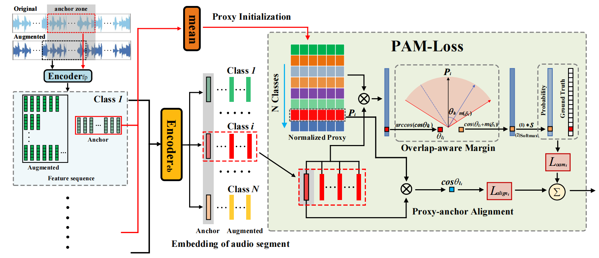 | Yuhang Su, Wei Hu*, Qiming Xu, Fan Zhang. "AMG-Embedding: a Self-Supervised Embedding Approach for Audio Identification", ACM Multimedia 2024. CCF A类会议 |
| 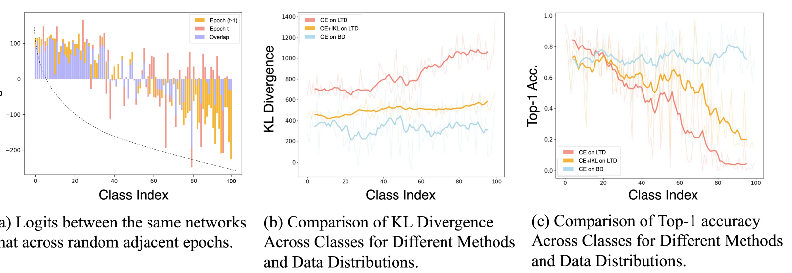 | Qihao Zhao, Yalun Dai, Shen Lin, Wei Hu, Fan Zhang, Jun Liu. "LTRL: Boosting Long-tail Recognition via Reflective Learning", ECCV 2024 (Oral). CV顶会 |
| 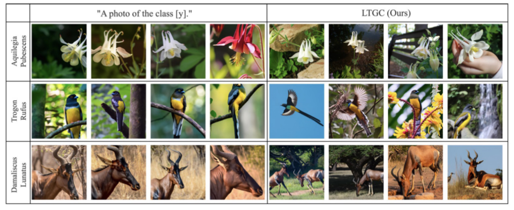 | Qihao Zhao, Yalun Dai, Hao Li, Wei Hu, Fan Zhang, Jun Liu. "LTGC: Long-tail Recognition via Leveraging LLMs-driven Generated Content", CVPR 2024 (Oral). CCF A类会议 |
| 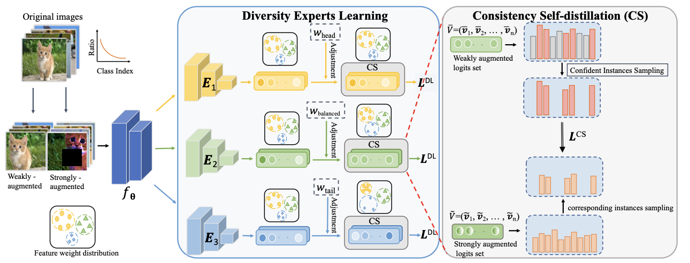 | Qihao Zhao, Chen Jiang, Wei Hu, Fan Zhang, Jun Liu. "MDCS: More Diverse Experts with Consistency Self-distillation for Long-tailed Recognition", ICCV 2023. CCF A类会议 |
| 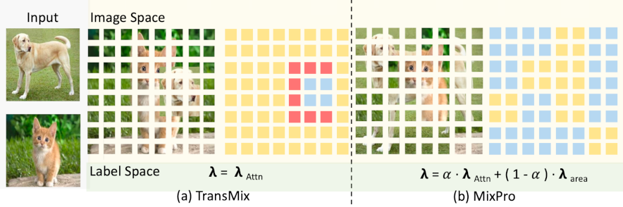 | Qihao Zhao, Yangyu Huang, Wei Hu*, Fan Zhang, Jun Liu. "MixPro: Data Augmentation with MaskMix and Progressive Attention Labeling for Vision Transformer", ICLR 2023. 深度学习顶会 |
| 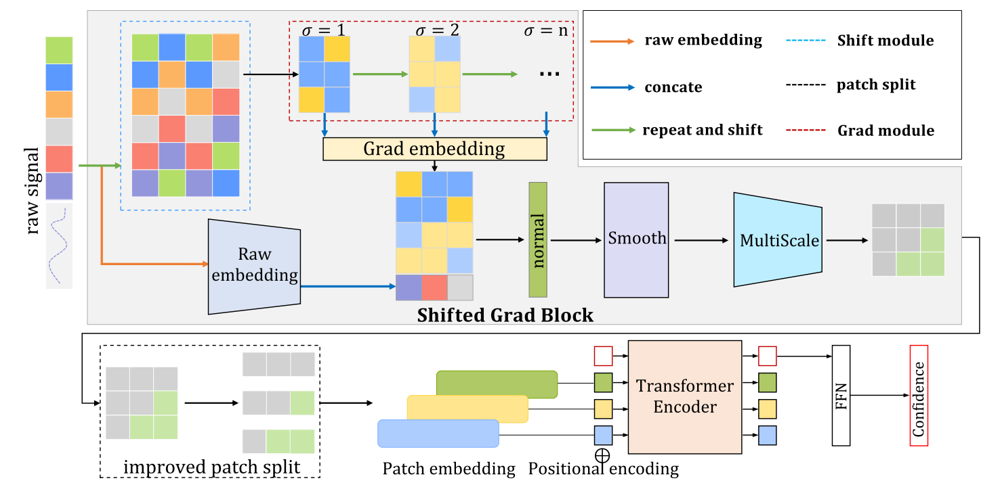 | Wei Hu, Fangnian Wang, Qiang Yin, Fan Zhang. "SGT: A Generalized Processing Model for 1-D Remote Sensing Signal Classification", IEEE Geoscience and Remote Sensing Letters, 2022. SCI影响因子4.8 |
| 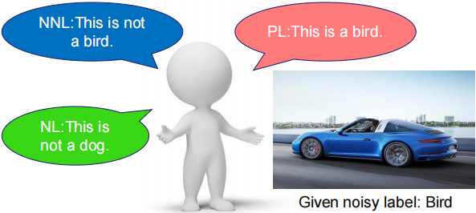 | Qihao Zhao, Wei Hu*, Yangyu Huang, Fan Zhang. "P-DIFF+: Improving Learning Classifier with Noisy Labels by Noisy Negative Learning Loss", Neural Networks, 2021. SCI影响因子8.05 |
| 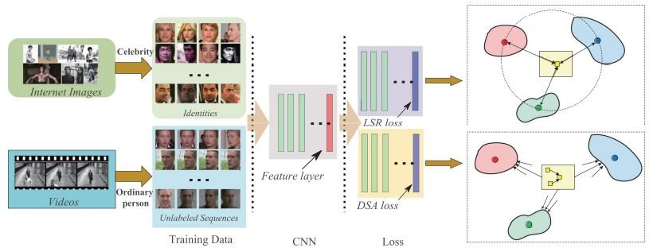 | Wei Hu, Yangyu Huang, Fan Zhang, Ruirui Li and Hengchao Li. "SeqFace: Learning discriminative features by using face sequences", IET Image Processing, 2021. (PDF). |
| 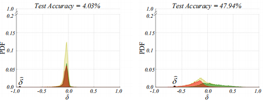 | Wei Hu, Qihao Zhao, Yangyu Huang, and Fan Zhang. "P-DIFF: Learning Classifier with Noisy Labels based on Probability Difference Distributions", ICPR 2020.CCF C类会议 |
| 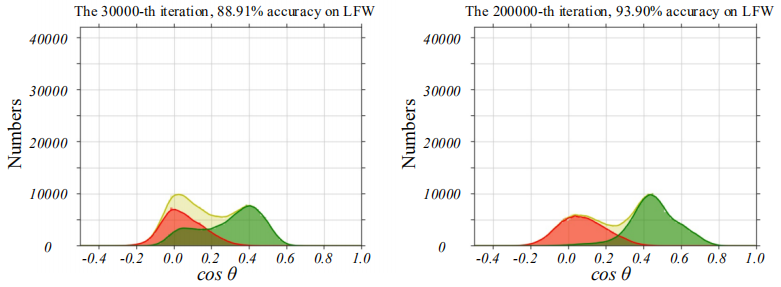 | Wei Hu, Yangyu Huang, Fan Zhang, and Ruirui Li. "Noise-Tolerant Paradigm for Training Face Recognition CNNs", CVPR 2019. (PDF, Video, Code). CCF A类会议，解析. |
| 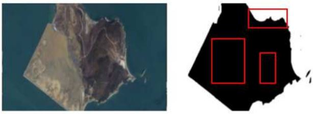 | Ruirui Li, Wenjie Liu, Lei Yang, Shihao Sun, Wei Hu, Fan Zhang, Wei Li. "Deepunet: A deep fully convolutional network for pixel-level sea-land segmentation", IEEE Journal of Selected Topics in Applied Earth Observations and Remote Sensing 11.11 (2018): 3954-3962.. (PDF). ESI高被引论文. |
| 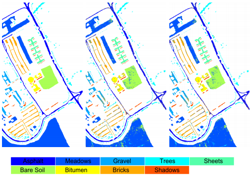 | Wei Hu, Yangyu Huang, Wei Li, Fan Zhang, and Hengchao Li. "Deep Convolutional Neural Networks for Hyperspectral Image Classification", Journal of Sensors, article ID. 258619, vol. 2015, 15 pages, 2015. (PDF,Code + Data), ESI高被引论文，解析 |
全局光照实时绘制
| 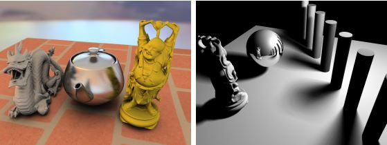 | Wei Hu, Yangyu Huang, Fan Zhang, Guodong Yuan and Wei Li. "Ray tracing via GPU rasterization", The Visual Computer(special issue on CGI 2014), 30(6):697-706, 2014. (PDF, Video) (SCI) |
| Wei Hu, Zhao Dong, Ivo Ihrke, Thoster Grosch, Guodong Yuan and Hans-Peter Seidel, "Interactive Volume Caustics in Single-Scattering Media", Proceedings of ACM SI3D, pp.109-117, 2010, (Result image is selected for Back Cover of the proceedings.) (PDF, Video) (CCF B类会议,EI). | |
| 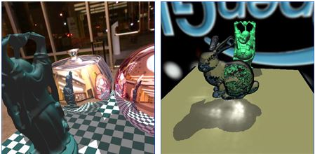 | Wei Hu and Kaihuai Qin, "Interactive Approximate Rendering of Reflection, Refraction and Caustics", IEEE Transaction on Visualization and Computer Graphics, 13(1):46-57, Jan. 2007. (PDF, Video) (CCF A刊，SCI) |
| 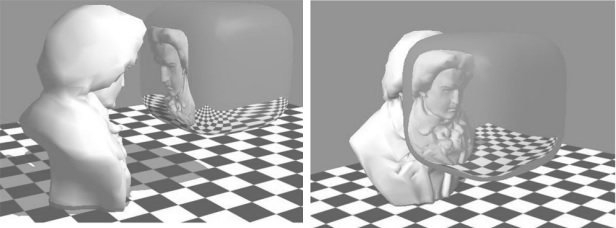 | Wei Hu, Kaihuai Qin, Huawei Wang, and Yafeng Li. "Reflection and Refraction on Implicit Surfaces", Journal of Computer Science & Technology, 21(2):166-172, 2006. (PDF) (SCI). A preliminary version appeared in Proc. of Pacific Graphics 2005 (CCF B类会议). |
图像编辑处理
 |
Wei Hu, Wei Li, Fan Zhang, Qian Du. "Real-time Decolorization using Dominant Colors". arXiv:1404.2728, 2014. (PDF, Supplementary, Video) |
| Wei Hu, Zhao Dong, Guodong Yuan. "Edit Propagation via Edge-Aware Filtering". Journal of Computer Science &Technology, 27(4): 830-840, 2012. (PDF, Video) (SCI) | |
| 胡伟, 袁国栋, 董朝, 疏学明. "基于暗通道优先的单幅图像去雾新方法 ", 计算机研究与发展, 47(12):2132-2140, 2010. (EI) | |
| 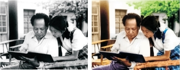 | 胡伟, 秦开怀, "高分辨率灰度图像的快速多分辨率着色", 计算机学报, 32(5):1062-1068, 2009. (EI) |
| 科研项目 |
- 北京高校青年英才计划项目“高维滤波方法在可视媒体编辑中的应用”，负责人
- 国家自然科学基金青年基金项目“基于图像空间的镜面相关效果实时绘制技术研究”，负责人，从事镜面效果实施绘制技术研究
- 国家973计划项目“危险化学品事故全过程遥测预警的关键科学问题研究”，参与人，三维虚拟现实和显示平台系统的研发
- 国家863计划项目“面向地球系统模式研究的高性能计算支撑软件系统”，参与人，海量数据可视化与大屏幕显示平台系统的研发
| 产品和解决方案 |
音乐智能分析
| 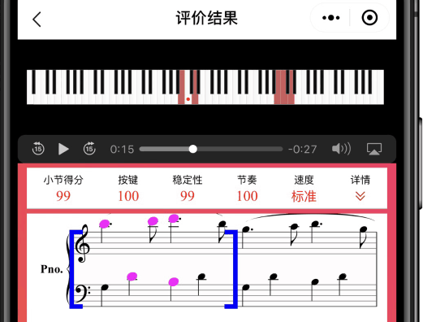 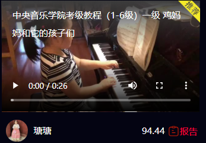 | “爱弹奏”微信小程序源于女儿学钢琴，想到人工智能是否能用于分析钢琴弹奏的对错，促使我产生利用人工智能分析钢琴弹奏的念头，并开发了最早的原型系统（介绍）。“爱弹奏”能够根据用户提供的钢琴演奏音视频，分析其中弹奏的问题，并给出分数。目前它逐渐变成了一个正式运营的应用。（爱弹奏） |
人脸/汽车识别
| 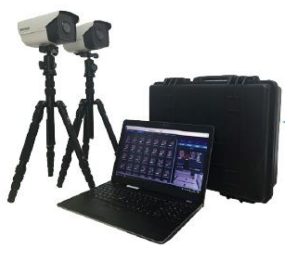 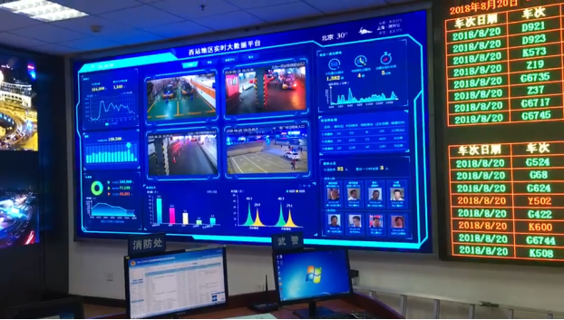 | 提供完整的人脸/汽车识别解决方案（支持移动端、PC服务端、AI芯片等），为安防、零售、娱乐等各类应用提供服务。曾为博鳌论坛、金砖会议等重大活动的安全保障工作提供服务。（CorsFace） |
投影拼接显示系统
 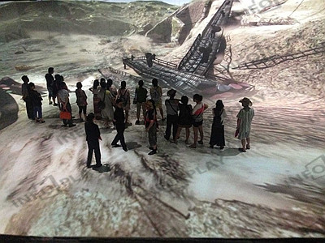 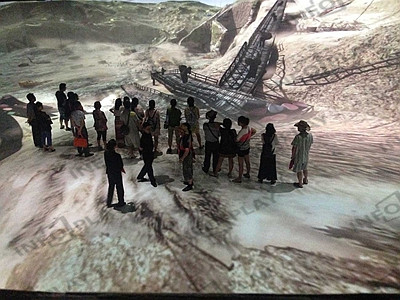 |
个人开发多投影拼接系统DPMPro，利用单反相机构建任意显示曲面上的投影拼接内容。目前应用的最大规模显示系统位于洛阳明堂，由9台 PC和19个全高清投影仪显示单帧分辨率8千万像素的主动立体视频。(InfoPlay, Betop,...) |
超级网管2000
| 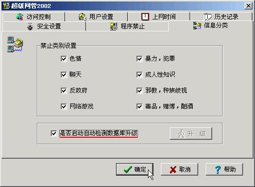 | 《超级网管2000》独立开发于2000年（研究生在读期间），是一个互联网不良信息过滤软件，总共销售超过十万份。2001年获得科技部中小企业科技创新基金资助（“基于Internet的网络信息管理及过滤软件”，No. 01C26222120814） |